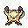
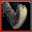
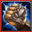
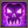
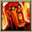
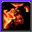
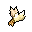
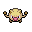

Pokédex / #056
Mankey #056
Fighting
Light and agile on its feet, and ferocious in temperament. When angered, it flies into an uncontrollable frenzy.
Generation 1 · Kanto

Stats
| Attack | 80 | |
|---|---|---|
| Defense | 35 | |
| Sp. Atk | 35 | |
| Sp. Def | 45 |
In the wild
| Wild level | 15–25 |
|---|---|
| HP | 40 |
| Experience | 7 |
| Egg groups | Field |
Evolution
- Evolves into Primeape at level 28.
Moves
| Level | Move | Type | Category | Power | Energy | Cooldown | Effect | |
|---|---|---|---|---|---|---|---|---|
| 1 | Tackle | Normal | Physical | 15 | 15 | 1s | Tackle is one of the most common and basic moves a Pokemon learns. It deals damage with no additional effects. | |
| 1 | Covet | Normal | Physical | 60 | 80 | 20s | The user endearingly approaches the target, then steals the target's held item. | |
| 1 | Scratch | Normal | Physical | 40 | 40 | 6s | Scratch inflicts damage and has no secondary effect. | |
| 1 |  | Low Kick | Fighting | Physical | 80 | 80 | 12s | Low Kick deals damage and has no secondary effect. |
| 1 | Focus Energy | Normal | Status | – | 70 | 60s | Increases Critical-Hit ratio by 50%. | |
| 5 | Fury Swipes | Normal | Physical | 18 | 45 | 9s | Fury Swipes inflicts damage, hitting 2-5 times per use. | |
| 8 | Karate Chop | Fighting | Physical | 50 | 60 | 10s | Karate Chop deals damage and has an increased critical hit ratio. | |
| 12 | Pursuit | Dark | Physical | 40 | 40 | 6s | Pursuit deals damage and has no secondary effect. | |
| 15 | Seismic Toss | Fighting | Physical | 80 | 80 | 12s | Seismic Toss deals damage and has no secondary effect. | |
| 22 |  | Cross Chop | Fighting | Physical | 100 | 100 | 15s | Cross Chop deals damage and has an increased critical hit ratio. |
| 26 | Assurance | Dark | Physical | 60 | 70 | 13s | Assurance does damage and has no secondary effect. | |
| 29 |  | Punishment | Dark | Physical | 60 | 100 | 20s | Punishment deals varying damage based on the opponent's stat increases. It starts at base power 60 and increases by 20 for every net stat boost of the opponent. |
| 33 |  | Thrash | Normal | Physical | 40 | 115 | 12s | The user attacks for 2-3 turns and then becomes confused. |
| 36 | Close Combat | Fighting | Physical | 120 | 120 | 18s | Close Combat deals damage but lowers the user's Defense and Special Defense by one stage each after attacking. | |
| 40 | Screech | Normal | Status | – | 100 | 35s | Screech lowers the target's Defense by two stages. | |
| 47 |  | Outrage | Dragon | Physical | 40 | 115 | 12s | User attacks for 2-3 turns and then becomes confused. |
Field abilities
DigRock ClimbStrengthRock SmashHeadbutt
Special abilities
Vital SpiritAnger Point
Egg moves
Beat UpClose CombatCounterEncoreFocus PunchForesightMeditateNight SlashRevengeReversalSleep TalkSmelling Salts
Technical machines
Aerial AceBideBody SlamBrick BreakBulk UpCounterDefense CurlDouble EdgeDouble TeamDynamic PunchEarthquakeFire PunchFocus PunchHeadbuttIce PunchIron TailMega KickMega PunchMetronomeMimicMud SlapOverheatPay DayPoison JabRageRain DanceRestRock SlideRock TombSeismic TossSkull BashSubmissionSubstituteSwiftTake DownTauntThunderThunder PunchThunderboltToxic
Drops
| Item | Amount | Chance | |
|---|---|---|---|
| bamboo leaves | 1 | 80% | |
 | fur | 1 | 33.3% |
| onigiri | 1–3 | 4.5% | |
| cookie | 1–3 | 3% | |
 | mankey doll | 1 | 0.1% |
| Fist Plate | 1 | 0.002% |